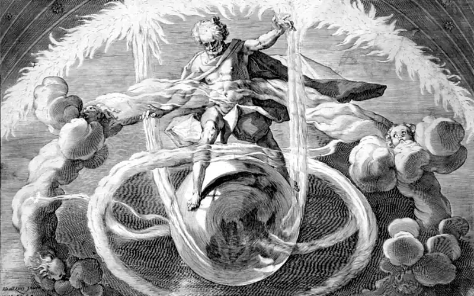
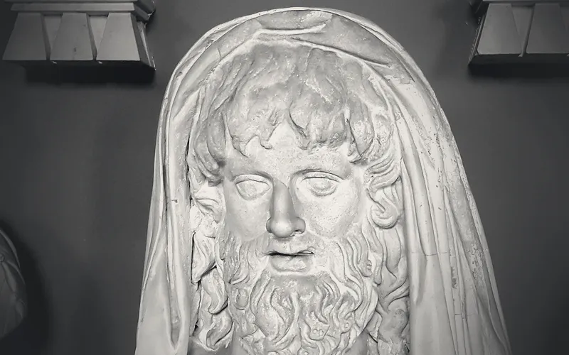

O nascimento do Céu
Gaia gerou Urano, o Céu estrelado, do mesmo tamanho que ela, para cobri-la por inteiro e ser a morada segura dos deuses.
Hesíodo, Teogonia PRIMORDIAL
PRIMORDIAL
Γαῖα
A Terra. Surgiu logo depois do Caos e é a base firme de tudo. Sozinha, gerou Urano, o Céu, as Montanhas e o Mar. Com Urano, teve os Titãs.
Que nota você dá? Clique nos cerberinhos:
 1 ★
2 ★
3 ★
4 ★
5 ★
1 ★
2 ★
3 ★
4 ★
5 ★
É minha avó: meu pai, Tífon, é filho dela com o Tártaro. Somos uma família grande e complicada.
Gaia gerou Urano, o Céu estrelado, do mesmo tamanho que ela, para cobri-la por inteiro e ser a morada segura dos deuses.
Hesíodo, TeogoniaCansada de Urano esconder os filhos dentro dela, Gaia fabricou uma grande foice e a entregou a Cronos, o mais novo dos Titãs.
Conhecer Cronos →Depois da derrota dos Titãs, Gaia gerou com o Tártaro o monstro Tífon, que desafiou Zeus e quase venceu. Tífon é o pai de Cérbero.
Hesíodo, Teogonia“Cantarei a Terra, mãe de todos, de firmes alicerces, a mais antiga, que alimenta tudo o que existe no mundo.”
Hino Homérico 30, à Terra (tradução livre)

Χάος
O vazio que existia antes de tudo. Dele nasceram a Escuridão e a Noite.

Κρόνος
Titã que reinou antes de Zeus.

Κέρβερος
Cão que guarda o Submundo. Hesíodo fala em cinquenta cabeças; a maioria dos autores, em três.